If resistance increases delay also get increases (Delay= R.C)
As technology shrinks interconnects also shrinks and thus wire resistance will get increase
To avoid this situation we will increase the height of interconnects
Parasitic Capacitance
As technology shrinks height of nets getting increase, so sidewall capacitance is increasing
As technology shrinks the dielectric become thinner, the capacitance will get increases
To reduce the capacitance, minimize the surface area which can be in common
So we keep the adjacent metal layers vertical and horizontal in designs
Parasitic Inductance
Mutual inductance affects: High frequency bus
Self-inductance affects: Clock nets
To limit inductance, we provide current return paths for high frequency signals
Separation and Shielding are the possible remedies
The rule of thumb has been that when the length of the signal path was long enough to become some percentage of a wavelength that the line itself starts to become a concern for signal integrity
Prominent above 500MHz & below 130nm for long wire nets & Power/Clock lines
Latch-Up
What is Latch-up?
Phenomenon occur with CMOS/ BiCMOS circuits
Generation of a low-impedance path between the VDD supply and the Ground
Reason for Latch-up
Due to regenerative feedback between the parasitic PNP and the NPN Transistors
Impact in the design
PN Junctions can produce Parasitic Thyristor
Forms by PNP/ NPN structures
Considerable input current is necessary to activate
Thyristor formed from parasitic transistors is triggered and generates short-circuit between VDD & GND
Results in self destruction/ system failure due to the direct connection between VDD & GND
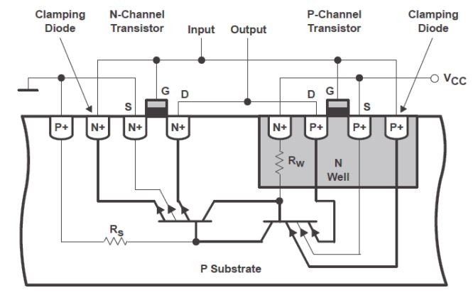<> NPN Transistor
Emitter – drain /source of the N-channel MOSFET
Base – P Substrate
Collector – N Well in which the complementary P-channel MOSFET is located
PNP Transistor
Emitter – drain /source of the P-channel MOSFET
Base – N Well in which the complementary P-channel MOSFET is located
Collector – P Substrate
Thyristor/SCR/PNPN diode
Anode – drain /source of the P- channel MOSFET
Cathode – drain /source of the N-channel MOSFET
Gate – P Substrate
Remedies for Latch-up
Latch-up resistant CMOS process
Reduces the gain of parasitic transistors(use of Si starting material with a thin epitaxial layer on top of a highly doped substrate)
Increase the holding voltage above VDD supply
Increase the dopant concentration of substrate & well (but will lead to higher VT)
Retrograde well structure (Highly doped area at bottom and lightly doped at top)
Layout techniques
Sufficient space between NMOS & PMOS
This reduces the current gain of the parasitic transistors
limited success because can be increased only to a certain limit
Reduce RS and RW by keeping Substrate & Well contacts as close as possible
Place substrate contacts as close as possible to the source connection of transistors connected to the supply rails (VSS n-devices, VDD p-devices)
This reduces the value of RSUBSTRATE and RWELL
A very conservative rule would place one substrate contact for every supply (VSS or VDD) connection
In Std. Cells based designs a common Well Tap is taking out as per the need
Guard Rings
Gain of transistors is reduced (in analog designs)
Electrostatic Discharge (ESD)
Electrostatic Discharge (ESD)
When two non-conducting materials rub together, then are separated, opposite electrostatic charges remain on both which attempt to equalize each other
A transient discharge of static charge that arises from either human handling or a machine contact
Reasons for Electrostatic Discharge
Thin & vulnerable Gate Oxide of the CMOS makes ESD protection essential for CMOS
Can be due to inductive or capacitive coupling
ESD can occur during the removal of extra metal by rubbing in metallization process
ESD occurs so rapidly that normal GND wires exhibits too much inductance to drain the charge before it can do damage
Impact on the design
ESD can also burn-out device/ interconnect if thermally initiated
PMOS is stronger than NMOS in ESD protection, because snap back holding voltage is lower for NMOS
Human Body Model (HBM)
The actual capacitance of the human body is between 150 pF and 500 pF & the internal resistance of the human body ranges from a few kiloohms to a few hundred
Peak current ≈ 1.3A, rise time ≈10-30ns
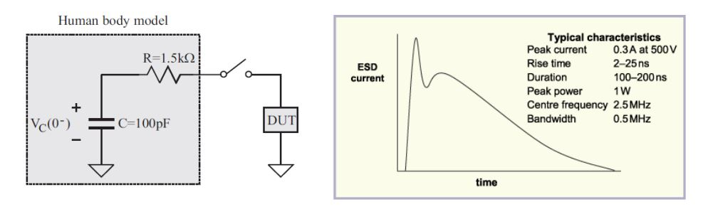 Machine Model (MM)
MM models the ESD of manufacturing / testing equipment
Peak current ≈ 3.7A, rise time ≈15-30ns, bandwidth ≈ 12 MHz
ESD stress caused by charged machines is severe because of zero body resistance
MM ESD withstand voltage is typically one tenth of HBM
Most ESD protection circuits can only protect HBM and MM
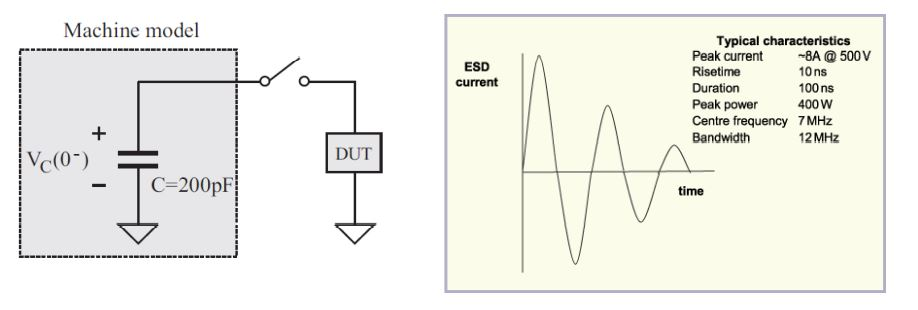 Charged Device Model (CDM)
CDM models the ESD of charged integrated circuits
As more and more circuits and functions getting integrated causes large Die size which provides large body capacitance which in turn stores charges for CDM in the body of IC
Inductance in the model is mainly due to the inductance of bond wires
Gate oxide breakdown is the signature failure of CDM stress, in contrast to the thermal failure signature of HBM and MM stress
CDM stress is the most difficult ESD stress to protect against since fastest transient and has the max. peak current
Peak current ≈ 10A, rise time ≈1ns
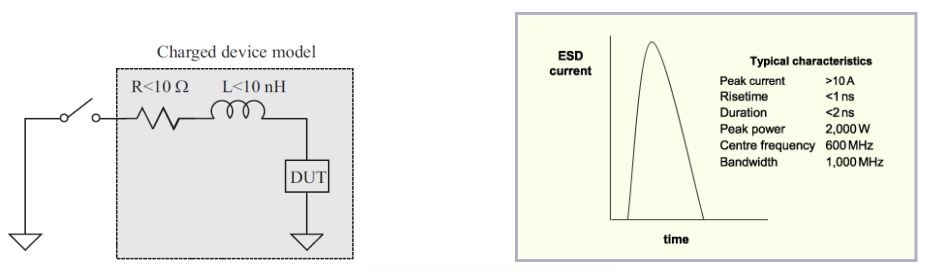 ESD Protection
The integration of Clamping Diodes
Limits the dangerous voltages and conduct excess currents into regions of the circuit that are safe
The Protection Diodes
Oriented to be blocking in normal operation
Situated between the connection to the component to be protected and the supply voltage lines safe regions consist primarily of the supply-voltage connections
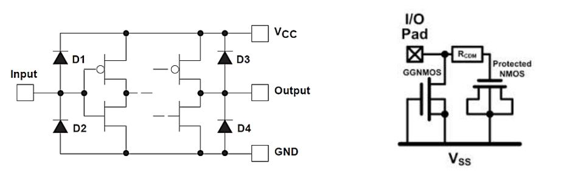
Electromigration
Electromigration (EM)
A failure mechanism caused by high energy electrons impacting the atoms in a material and causing them to shift position
Enhanced and directional mobility of atoms under the influence of an electric field
Reason for Electromigration
Forms a positive feedback path where EM will cause an atom to move down a wire, slightly narrowing the wire width at that location and increasing the current density
This increased current density then further increases electromigration, causing more atoms to be displaced Transport of material caused by the gradual movement of ions in a conductor due to the momentum transfer between conducting electrons & diffusing metal atoms
It is most problematic in areas of high current density
Significant as size decreases & is most significant for unidirectional (DC) current
Impact in the design
Excessive EM leads to open (voids) & short circuits (Hillocks) and thus decreases the reliability of the chip
Approaching life time of device faster
Increased power consumption
Higher on-chip temperatures
High Voltage operation
High frequency switching
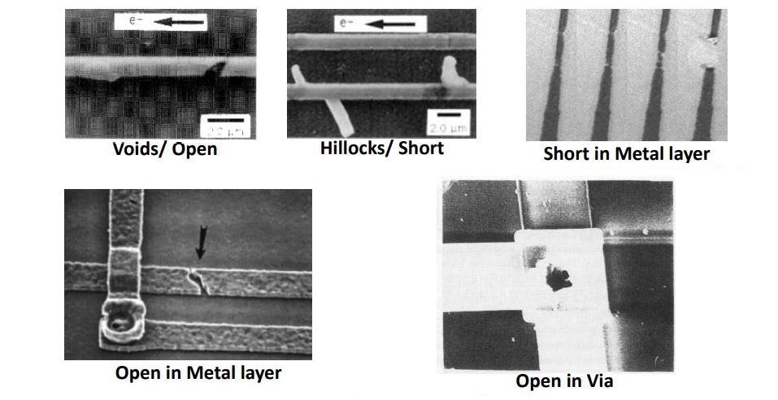 EM Remedies and Precautions
Wire widening to reduce current density
Good power management techniques
Bigger Power Grids for power nets (putting power grids on thicker layers)
Wire-widening for signal nets
Better Power Grid planning
Double sizing for Power Greedy nets
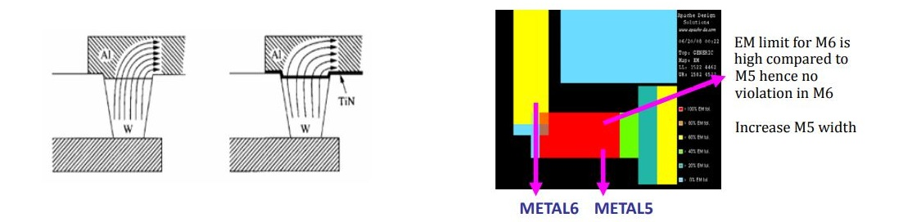
Providing Redundant Vias
Designing the circuit to run at lower voltage levels
EM resistance can be increased by alloying with Copper
Controlling temperature by using a thermal-aware IC design methodology
DFM techniques that reduce variability
Besides, need to be aware of “dishing” effect (CMP)
Types of EM checks
Related to Currents
Average EM checks
RMS EM checks
Peak EM checks
Related to Nets
Signal EM checks
Power EM checks
Limits for all these EM checks will be specified in technology file as a function of minimum life of the device, depending on the application
All the three Current related EM checks need to be satisfied for Signal EM unless otherwise specified
For Power nets, satisfying Average EM numbers would suffice
EM failure mechanisms
Timing Failure: Narrowing of the wire will increase wire resistance, which may cause a timing failure if a signal can no longer propagate within the clock period
Functional Failure: Electromigration will continue until the wire completely breaks, allowing no further current flow and resulting in functional failure
EM Rule Types
Metal Layer based (This was the only rule used in older technologies)
Metal length or width dependent EM Rules
Length and width of upper and bottom Metal and also depends on Via width
Complex rules with polynomials
Black’s Equation Mean Time To Failure (MTTF), t50 = CJ-ne(Ea/kT)
— t50 = the median lifetime of the population of metal lines subjected to EM
— C = a constant based on metal line properties (depends on cross sectional area)
— J = the current density (Jdc < 1 – 2 mA / mm2)
— n = integer constant from 1 to 7; many experts believe that n = 2
— T = temperature in degree Kelvin
— k = the Boltzmann constant
— Ea (Activation Energy) = 0.5 - 0.7 eV for pure Al
Antenna Effect
Antenna Effect
A phenomenon of charge accumulation in metal segments that are connected to an isolated Gate (Poly) during the metallization process
This phenomenon occurs during process, so also known Process Antenna Effect (PAE)
It occurs when conducting net act as antenna, amplifying the charge effect
The conductive layers are receiving the charge, so termed as Antenna Effect
Reason for Antenna Effect
Glow discharge during Plasma etching results in electric charging, which when occurred in conductive layer leads to Antenna effect thus termed Plasma- Induced/ Process-Induced damage (PID)
Charging occurs when conductor layers not covered by a shielding layer of oxide are directly exposed to Plasma
During process like soldering the chip is protected with some shielding
But during fabrication there is no such protection & will lead to Antenna effect
For Aluminium based process PAE is prominent at Etching stage and for Copper based process PAE is prominent at Chemical-Mechanical Polishing (CMP) stage
If the area of a higher metal layer connected to the Gate through lower metal layer/ layers, then the charge of higher metal layer got added to the lower metal layer which can also cause PAE called Accumulative Antenna Effect
Impact in the design
If the area of the layer connected directly to the Gate the static charges are discharged through the Gate, the discharge can damage the oxide that insulates the gate and cause the chip to fail
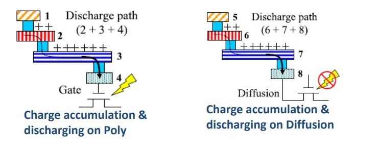
Fowler-Nordheim (F-N) tunneling current will discharge through the thin oxide and cause damage to it
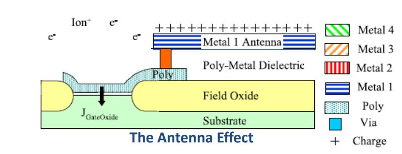
Remedies for PAE
Assigning higher metal layers for routing
Higher metal layers will not be connected directly to the Gate Connect various metals through Via connections
Inserting Jumpers
If PAE is in lower layers then PAE can be reduced by connecting it to higher layers through Jumpers
Jumpers will reduce the peripheral metal length, which is attached to the Gate
Connecting Antenna diode
If it is in higher layers, Jumper wont be a solution, hence need diodes
As soon as extra charge is induced onto metal/ poly the diode diverts the extra charges to the substrate
But for buffer insertion higher metal layers has to come to lower metal layer (M1 or M2) to connect to pins of buffer and go back and also there may not be enough place for buffer insertion
After routing only we go for antenna check, so Buffer insertion may lead to congestion and DRC violations
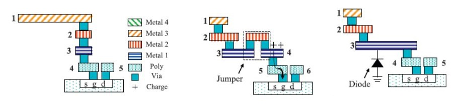
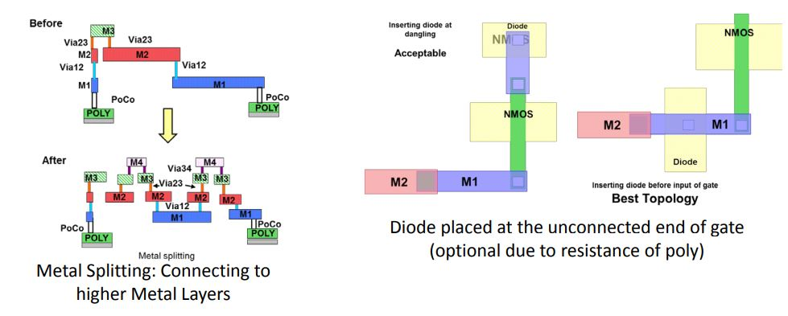
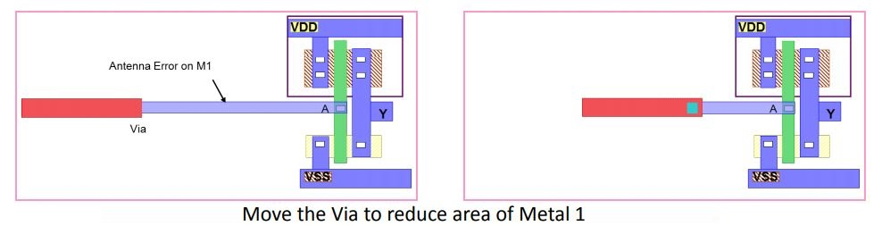
Antenna Ratio (AR)
A design rule to prevent charge accumulation during Metal/ Poly-Si layer etching which limits the area of metal segment connected to the Gate oxide
Foundries set a maximum allowable AR for the chips they fabricate
The AR is defined as the ratio of plasma-exposed area As,metal to the gate oxide area Apoly as formulated,
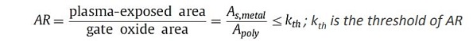
This rule can be applied to any metal segment connected to the Gate
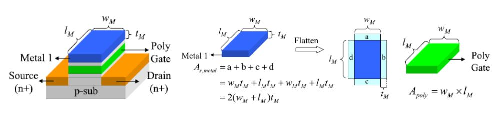 Antenna Effect possibilities example
Assume a foundry setting a maximum allowable antenna ratio of 500
If a net has two input gates that each have an area of 1 square micron,
any metal layers that connect to the gates and have an area larger
than 1,000 square microns have process antenna violations because
they would cause the antenna ratio to be higher than 500
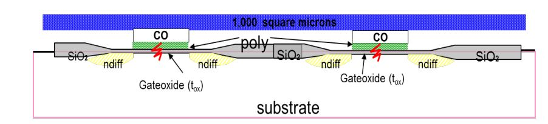
Dominant as technology shrinks
When oxide thickness reduces
More metallic structures are added to the chip
Antenna (ANT) Rules
The Antenna Ratio
For Aluminium at Etching stage (metal deposition)
The top of the metal is protected by a resist during this step, so the antenna rules for this process should be based on the metal sidewall area
For Copper at Chemical-Mechanical Polishing (CMP) stage
Charge accumulation occurs during CMP
In this process, the sides of the metal are protected, so the antenna rules need to be based on the metal's top surface area
Metal used in the process depends on Technology
From 28nm onwards Aluminium is replacing Copper
PAE as a side effect of the manufacturing process
Plasma etchers/ ion implanters induce charge into various structures connected to Gate Oxide
This induced charges destroy the Oxide layer - a permanent damage
Conductor layer pattern etching processes
Amount of accumulated charge is proportional to perimeter length
Ashing processes
Amount of accumulated charge is proportional to area
Ashing processes remove remaining photo resist layers after etching processes of a conductor layer
In the late stage of the processes, the area of a conductor layer pattern is directly exposed to plasma
Contact etching processes
The amount of accumulated charge is proportional to the total area of the contacts
Contact etching processes dig holes between two conductor layers
In the late stage of the processes, the area of all the contacts on the lower conductor layer pattern is directly exposed to plasma
Crosstalk
What is Crosstalk?
Refers to a signal affecting another signal being transmitted in vicinity caused by capacitive/ inductive coupling
Crosstalk is the unwanted coupling of energy between two or more adjacent lines which can change the required signal and is also termed as Xtalk
Occurs on long adjacent wires
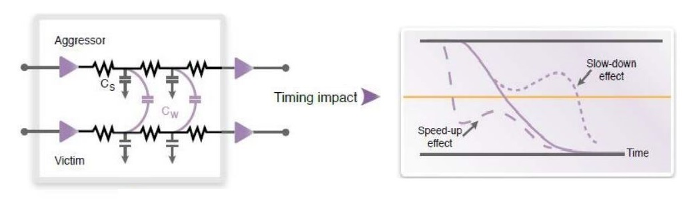
Can be interpreted as the coupling of energy from 1 line to another via:
Mutual Capacitance, Cm(due to Electric Field)
Mutual Inductance, Lm (due to Magnetic Field)
Impact of Crosstalk in the design
Functional Failures
Noise induced glitches
If the Glitch duration is that of clock period duration, an extra clock cycle effect
Timing violations
If aggressor switches in opposite direction to the victim : Setup time Violation
If aggressor switches in same direction to the victim : Hold time Violation
If the victim line is not terminated at both ends in its characteristic impedance the induced spurious signals can reflect at the ends of the line and travel in the opposite direction down the line
Thus a reflected near-end crosstalk can end up appearing at the far end and vice versa
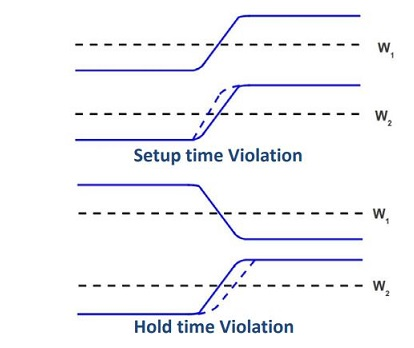
Types of Crosstalk
Energy that is coupled from the actual signal line, the aggressor, onto a quiet passive victim line so that the transferred energy "travels back" to the start of the victim line. This is known as the backward or nearend crosstalk
Energy that is coupled from the active signal line, the aggressor, onto a quiet passive victim line so that the transferred energy "travels forward" to the end of the victim line. This known as forward or farend crosstalk
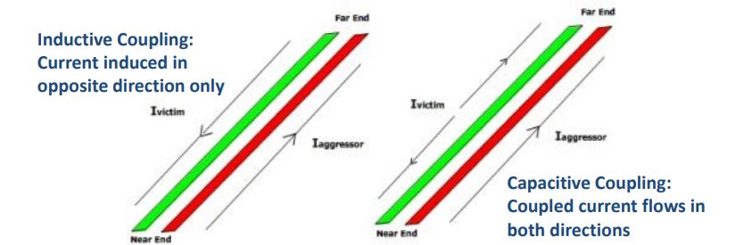
Remedies to avoid Xtalk
Its a 3 dimensional problem, so height, width and length matters
Noise/Bump violations can be fixed by changing the spacing between critical nets
Shield the clock nets (critical nets) from other nets by ground lines
Net Re-ordering
Avoid routing the critical nets parallely for long distances
Modify the clock net (critical nets) minimum width from normal value to a larger one
This makes the router to skip a grid near clock net to prevent spacing violation
This technique not only reduces crosstalk, but will also have a lower resistance due to larger line width & less side wall capacitance
Can be fixed either by upsizing (increasing the drive strength) of the victim, or by downsizing (decreasing the drive strength) of the aggressor
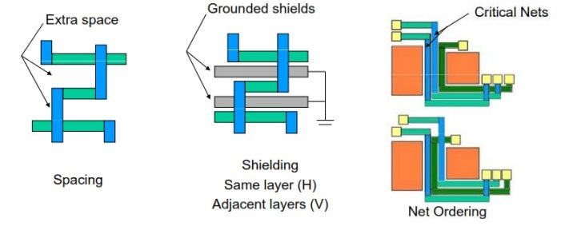
Soft Errors
Soft Error (Random Particle Error)
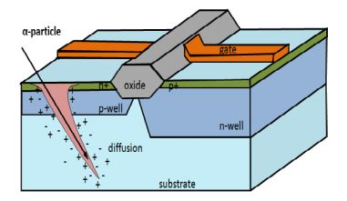
Soft error is the phenomenon of an erroneous change in the logical value of a transistor, and can be caused by several effects, including fluctuations in signal voltage, noise in the power supply, inductive coupling effects etc., but, majority of soft errors are caused by cosmic particle strike on the chip
With technology scaling, even low-energy particles can cause Soft Errors
Soft errors are radiation induced faults which happen due to a particle hit, either by an alpha particle from impurities in packaging material or a neutron from cosmic rays
When particles strike the silicon substrate they create hole-electron pairs which are then collected by PN-Junctions via drift and diffusion mechanisms
This collected charge creates a transient current pulse and if it is large enough, it can flip the value stored in the state saving element (bit cell, latch etc.)
These upsets are called Single Event Upsets (SEU)
Impact in the design
Soft error can result in incorrect results, segmentation faults, application or system crash, or even the system entering an infinite loop
When particle strike happens in combinational circuit, the result is a glitch which can then propagate to a latch where it could be clocked in and incorrect data can be latched
Precautions to avoid Soft Errors
Radiation Hardening: Technique to reduce the Soft Error rate in digital circuits
Radiation hardening is often accomplished by increasing the size of transistors who share a Drain/ Source region at the node
Self Heating
If current flows through a wire, then due to the resistance of the wire heat will generate
Oxide surrounding wires is a thermal insulator, so heat tends to build up in wires
Hotter wires are more resistive & become slower
Wire self-heating is only a negligible effect in the supply lines on bulk-CMOS ICs
Self-heating Design Rule/ Self-heating Limit AC current densities for reliability